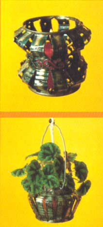

This inexpensive craft is easy, fun... and it sells!
Figuratively speaking. Barney Munnerlyn of Arkansas can make a silk purse out of a sow's ear. Barney, you see, fashions "pewter" objects out of tin cans . . . lovely creations he calls "fairy lanterns".
For the past five years, these decorative and functional art-objects-from-waste have (along with other crafts) become a full-time profession for Barney. And he's quick to tell you that he "loves every minute" of the work.
Prior to 1970, however, Munnerlyn sold insurance and didn't enjoy that job in the least. But, one of the shops that he visited in the "line of duty" was a crafts store, and the beads that were sold there caught Barney's interest. It wasn't long before Munnerlyn quit the insurance business to set up his own crafts shop, where he designed and sold original jewelry and copper butterflies mounted on driftwood plaques.
Barney came upon the idea for his lanterns accidentally. One day, as he welded two butterfly wings together, he used his torch to carve his name in the side of a tin can. That simple act set him to thinking: If he could carve out his name, then he could cut designs in the containers as well! Munnerlyn produced tin butterflies first, but he decided that he liked the copper ones better. Then, when Barney finally decided to make something out of whole cans, fairy lanterns were born.
These decorations have been such a success that the craftsman now travels 12 months out of the year . . . to demonstrate his work at art and craft fairs all over the country. Between shows, Barney returns to Little Rock to replenish his supplies and answer mail requests for the lanterns, which are priced between $3.00 and $7.50.
These attractive tin lanterns don't require a lot of equipment, either. You'll need, first of all, an acetylene torch and a steady hand to go along with it. Besides the torch, you will, of course, have to have an empty can (anything from a soup can to a No. 10 will do), some galvanized clothesline wire, a pair of pliers, a wire brush, goggles to protect your eyes, and a flameproof surface to put under the can while you work.
The first step is to light the torch and get the flame down to a pencil-lead size. Then-using about three-fourths of an inch of space on the small cans and a little over an inch on the largest-"burn" out a scroll-like design around the edges of the top and bottom rims.
Next, cut some evenly spaced, vertical lines around the center of the can to within a quarter-inch of your scrolled borders. On taller models, you may want to break the vertical lines into two sections and leave a narrow (decorated or solid) strip in the middle of the can. (Either way, it's best to go over the cuts to be sure you haven't "missed" any spots.)
After the can is cool to the touch, rub it diligently with a wire brush to get rid of the small pieces of loose metal and any paint that might have been on the original container. (Or-if you're well-versed in the use of your torch-you can increase the size of the flame, move far enough away so it doesn't cut the container, and simply burn the paint off.)
Once the can has its "pewter" finish, work from the inside and push out the strips with your fingers until the desired height is reached. Then, put the can on a hard surface . . . push down to make it level . . . attach the wire handle . . . and-presto!-you have a delightful fairy lantern that can hold a candle, a flower arrangement, or a potted plant.
|
 |
|
|